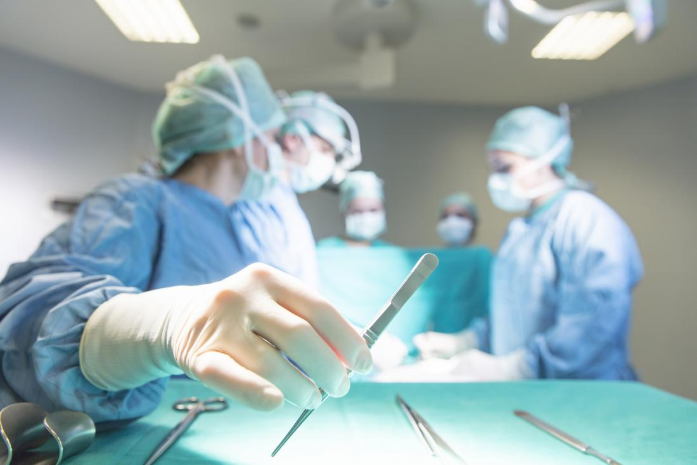

NEUROLOGY HOSPITAL
NEUROLOGY HOSPITAL
| Home | Patient & Visitors | Service & Specialities | Physicians | About | Contact Us |
Stroke Center
The Stroke Center at Appolo Hospital
|  |
The Best Place for Stroke Treatment
When Stroke Happens, Minutes Matter- Stroke is a medical emergency as serious as a heart attack. Receiving medical attention as early as possible within the first three hours of a stroke can be the difference between life and death-a complete recovery or a lifetime of disability.
That's why we've set up an emergency fast track system to diagnose stroke and begin treatment quickly. Our "stroke code response team" can research patient history, perform neurological exams, blood tests, and CT scans and interpret them within 45 minutes of a patient's arrival in the Emergency Department. And their expertise is just as impressive as their timing.
Individualized Care-From Diagnosis to Treatment and Recovery- Stroke comes in many forms and affects many systems of the body. Complete stroke treatment requires a comprehensive approach. We provide a range of services with the quality and expertise necessary to help increase the chances of successful outcomes. We offer:
| Book Appointment | Location | Our Provider | ConditionsWe Treat | Test & Traetment | Stroke Center | URMC Neurology |
| Contact NCT Hospitals in India International Hospitals Apollo Clinics Reach Hospitals Apollo Cradle Phone: 416-860-7554 Email: appoloadmin@neurologycentr.com | Hours of Operation
Monday - Friday 8am - 6pm
Saturday 8am - 3pm
Service: 24*7
Connect:
|
| © 2018 Neurology Centre of Toronto | Privacy Policy | Terms of Use | Web Credits |